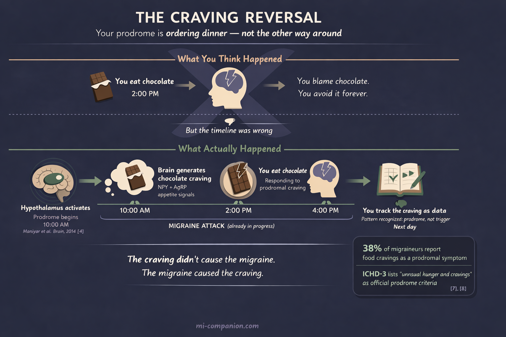
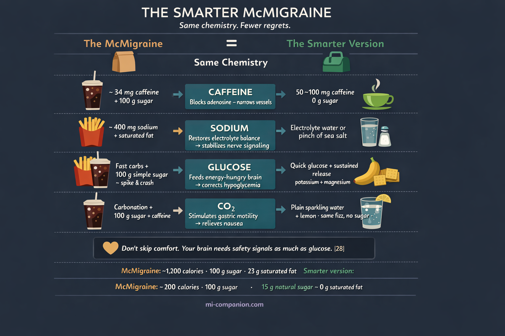

By Rustam Iuldashov
30 years lived experience with chronic migraine | Sources: 28 peer-reviewed references including Brain (n=8, PET imaging), Cochrane Database of Systematic Reviews (n=7,238), European Journal of Neurology (n=3,306), Headache (n=20) | Last updated: March 12, 2026
Medical Review: This content is based on peer-reviewed research from Brain, Nature Reviews Neurology, Cochrane Database of Systematic Reviews, European Journal of Neurology, Nutrients, The Journal of Pain, Frontiers in Neurology, Headache, Digestive Diseases and Sciences, Journal of Neurology, and Cephalalgia.
Important Notice: This article is for informational purposes only and does not replace professional medical advice. The author is not a licensed physician or healthcare professional. Always consult your doctor before making dietary or treatment decisions based on this content.
Key Takeaways
- The “McMigraine” (fries + Coke during an attack) has a real biochemical basis: caffeine blocks adenosine, salt restores electrolytes, sugar corrects glucose dips, carbonation counters migraine-related nausea.
- Food cravings during a migraine are a prodromal symptom, not a trigger — your hypothalamus drives the craving as part of the attack, often before headache begins.[4][7]
- Up to 80% of migraine sufferers experience gastroparesis (delayed stomach emptying), explaining why oral meds fail and carbonated drinks provide relief.[25]
- A healthier “migraine meal” replicates the same chemistry: green tea for caffeine, electrolyte water for sodium, a banana for glucose, sparkling water for nausea.
- Your attack cravings are diagnostic data. Track them alongside the headache timeline to uncover patterns your brain is already signaling.
Five hours in. The triptan didn’t touch it. Your stomach has been staging a quiet rebellion since noon, and now — inexplicably — you want McDonald’s fries with an almost physical urgency. Not a salad. Not a smoothie. Salty, greasy, golden fries and an ice-cold Coke.
You’re not alone. In 2025, TikTok turned this exact craving into a viral phenomenon: the “McMigraine” — a large Coke and a large fries ordered mid-attack. One video alone crossed three million views.[1] Reddit threads going back years echo the same ritual, with users debating whether Diet Coke counts (it doesn’t, says the community), whether the fries must come from McDonald’s (apparently, yes), and whether their neurologist knows about this.[2] Some do.
So is this just another wellness myth in a drive-thru wrapper? Not exactly. The science behind the McMigraine is real. Just not in the way TikTok thinks.
Your Brain Ordered Those Fries Before You Did
Here’s what everyone gets wrong about the McMigraine: they think the food stops the migraine.
It doesn’t. The migraine may have already started — and it’s the one placing the order.
Hours or even days before the headache arrives, your brain enters the prodrome — a neurological warm-up act most people never recognize as part of the attack.[3] During this phase, the hypothalamus — the brain’s master control center for hunger, thirst, sleep, and temperature — lights up with unusual activity. A landmark 2014 PET imaging study by Maniyar and colleagues captured this in real time: the posterolateral hypothalamus, midbrain, and periaqueductal gray all showed increased blood flow during the premonitory phase — before any pain began.[4]
This matters because the hypothalamus controls appetite. It produces neuropeptide Y and agouti-related peptide — two proteins that create hunger and drive specific cravings.[5] When the hypothalamus fires during prodrome, it doesn’t send a polite suggestion. It sends an urgent, almost primal demand for sweet, salty, or fatty foods.[6]
The International Classification of Headache Disorders (ICHD-3) recognizes this. Its official definition of prodrome includes “unusual hunger and cravings for certain foods.”[7] In one prospective study, 38% of participants reported food cravings the day before at least one in four of their attacks.[8]
Now the chicken-and-egg problem gets fascinating. For decades, patients have blamed chocolate, cheese, or salty snacks for triggering their migraines. But growing evidence suggests the opposite: the craving comes first — as a symptom of an attack already unfolding inside the brain. You eat the chocolate. The headache arrives two hours later. You blame the chocolate. But the migraine was already underway.[9]
A 2021 experimental study of 53 migraineurs examined this overlap directly. What patients identified as a food trigger closely mirrored the cravings they experienced during prodrome.[10] The trigger wasn’t a trigger at all. It was a warning.
When you find yourself in a McDonald’s drive-thru mid-attack, your brain has already decided what it needs. The question is whether it’s right.

The Chemistry of a McMigraine
A large Coke. A large fries. Let’s break down what’s actually in there — and why each component has a plausible biological role during a migraine attack.
Caffeine: the analgesic hiding in plain sight
A large McDonald’s Coke contains roughly 34 mg of caffeine — modest compared to coffee, but enough to matter. Caffeine is one of the most studied substances in headache medicine. A 2014 Cochrane review of over 7,000 patients found that adding caffeine to analgesics dropped the number needed to treat from 4.7 to 3.9.[11] For headache specifically, caffeine boosted pain relief by roughly 30%.[12]
The mechanism is elegant. During a migraine, adenosine levels rise in the brain, dilating blood vessels and amplifying pain signaling. Caffeine blocks adenosine receptors, narrowing vessels and enhancing absorption of other pain medications — which is why it’s a key ingredient in Excedrin.[13] A 2022 meta-analysis of seven randomized trials involving 3,306 patients confirmed: the aspirin-paracetamol-caffeine combination achieved pain-free rates more than double that of placebo at two hours.[14]
The caffeine paradox: Caffeine also causes migraines. Habitual consumption breeds dependence. Skip your morning cup, and withdrawal triggers rebound headaches. The key is dose and timing: during an acute attack in a non-habitual user, modest caffeine is genuinely therapeutic.[15]
Salt: not junk — possibly rebalancing
A large order of McDonald’s fries delivers roughly 400 mg of sodium. During a migraine, this isn’t junk. It may be replacing what the attack has stripped away.
One in three people with migraine identifies dehydration as a trigger.[16] But dehydration isn’t just about water — it’s about balancing the dehydration equation. When sodium drops, nerve cells misfire more easily, lowering the threshold for an attack.[17] Nausea and vomiting during migraine compound the problem, depleting electrolytes further and creating a vicious cycle.
The evidence on sodium is complex. Some studies link high intake to more headaches; others suggest acute sodium restoration provides relief.[18] What is clear: the brain demands precise electrolyte balance for normal electrical signaling. Disrupt it, and you lower the floor beneath which a migraine can start.
Sugar and carbs: feeding a starving brain
Your brain is an energy glutton. It burns roughly 20% of the body’s oxygen and 25% of its glucose — despite making up only 2% of body weight.[19] Hypoglycemia has been recognized as a migraine trigger since 1935.[20] In one classic experiment, glucose loading in fasting migraineurs triggered attacks in 6 out of 10 subjects — suggesting that blood sugar swings may directly provoke the event.[21]
A 2022 scoping review in The Journal of Pain proposed something bolder: the “neuroenergetic hypothesis” — the idea that migraine is fundamentally a disorder of brain energy metabolism.[22] The researchers found impaired glucose processing, mitochondrial dysfunction, and gray matter reduction in energy-critical brain areas. A 2026 study in Frontiers in Neurology added a new layer, confirming that chronic migraine subjects experience deeper blood sugar dips after meals than controls.[23]
The fast carbohydrates in fries and the sugar in Coke deliver a rapid glucose spike. For someone whose attack was triggered by a skipped meal or a blood sugar crash, this genuinely helps — at least in the short term.
Carbonation: the anti-nausea fizz
One more ingredient hides in that Coke: the bubbles. Carbonation stimulates mechanoreceptors in the stomach lining, promoting gastric motility.[24] This is critical because migraine frequently paralyzes the stomach. A scintigraphy study found that 78% of migraineurs met criteria for gastroparesis during attacks — and 80% even between them.[25] The time to half-emptying was 188.8 minutes for migraineurs versus 111.8 for controls. Your stomach, during a migraine, is essentially asleep.
This is why oral medications often fail mid-attack. The pill sits in a motionless stomach, dissolving but going nowhere. Carbonation encourages burping, releases trapped gas, and provides mechanical relief from the nausea that makes eating, drinking, and keeping medication down feel impossible.
⚠️ When to Seek Emergency Help
Not every severe headache is “just a migraine.” A sudden, explosive headache that reaches maximum intensity within seconds — sometimes called a thunderclap headache — can indicate a life-threatening condition such as a subarachnoid hemorrhage or stroke.
If you experience the worst headache of your life, a headache accompanied by fever and a stiff neck, sudden vision loss, confusion, weakness on one side of your body, or a headache following a head injury, call your local emergency number immediately. Do not attempt to manage these symptoms with food, caffeine, or any home remedy. This is not a migraine hack moment. This is a 911 moment.
What the Community Actually Does
The Reddit r/migraine community has discussed this long before TikTok noticed. When one user asked “What are your migraine meals other than McDonald’s?” the responses painted a vivid picture: salt-and-vinegar chips, instant ramen, pink Himalayan salt dissolved on the tongue, plain crackers with flat ginger ale.[2]
One theme ran through every thread: nobody planned these meals. The cravings arrived suddenly, often hours before the headache peaked. Several users described driving to McDonald’s in a near-dissociative state — barely seeing through photophobia, but absolutely certain they needed fries.
This pattern maps perfectly onto the prodrome research: a hypothalamus in overdrive, demanding rapid salt, sugar, and energy to stabilize a brain under siege.
The Healthier McMigraine
Neurologists who’ve been asked about the trend validate the experience but redirect the approach. Dr. Matthew Robbins of Weill Cornell Medicine acknowledges the hack works for some but cautions against relying on it.[26] Dr. Tania Elliott recommends a simpler formula: electrolytes, light caffeine, and a balanced snack.[27]
Here’s a version that captures the same biochemistry without the inflammatory aftermath:
The Smarter McMigraine
Caffeine. A small green tea or black coffee — 50 to 100 mg of caffeine, enough to block adenosine without the sugar crash.
Salt and electrolytes. Electrolyte water or a pinch of sea salt dissolved in warm water. Replaces sodium without the saturated fat.
Fast carbs + sustained energy. A banana with a few crackers. The banana delivers potassium, natural sugar, and magnesium; the crackers provide quick glucose that the fruit sustains.
Anti-nausea. Plain sparkling water with lemon. The carbonation without the 100 grams of added sugar.
Comfort. Don’t dismiss it. If warm, salty, familiar food calms your nervous system during an attack, that has therapeutic value. The psychological benefit of comfort food is a key part of any migraine survival kit — your brain needs safety signals just as much as it needs glucose.[28]

Your Cravings Are Data
The McMigraine is not a cure. It’s not a treatment plan. But it’s also not nonsense.
It’s a messy, real-world signal that millions of migraine brains have been broadcasting for years — long before TikTok gave it a name. Your cravings during an attack are not random. They are the prodrome speaking — your hypothalamus mapping what the brain needs to survive the next few hours.
Instead of ignoring them or feeling guilty, track them. Write down what you craved, when the craving began, how it mapped to the headache timeline. Over time, patterns emerge — and those patterns become some of the most valuable diagnostic data you’ll ever collect.
In 30 years of living with migraine, I’ve had my own McMigraines more times than I can count. The specifics change — sometimes it’s pickles, sometimes black bread with butter, sometimes a Coke at 2 AM. What doesn’t change is the feeling: a certainty rising from somewhere below conscious thought. A body that knows what it needs before the thinking brain catches up.
Trust your cravings. Then outsmart them.
⚕️ Important Medical Disclaimer
This article is for informational and educational purposes only and does not constitute medical advice, diagnosis, or treatment. The author, Rustam Iuldashov, is not a licensed physician, neurologist, or healthcare professional. He is a patient advocate with 30 years of personal experience living with chronic migraine.
All clinical claims in this article are sourced from peer-reviewed research published in indexed medical journals. Study designs and sample sizes are noted where applicable.
The McMigraine trend discussed in this article is a social media phenomenon, not a medical recommendation. Relying on fast food as a migraine treatment strategy may worsen long-term health outcomes, including cardiovascular risk and chronic headache progression. Always consult a qualified healthcare provider for questions about your individual migraine treatment, dietary approach, or medication decisions.
This content was last reviewed for accuracy on March 12, 2026.
References
- Fox News Digital. “Can McDonald’s fries and Coke cure migraines? Doctors weigh viral TikTok claim.” May 20, 2025. (News report; viral video with 3+ million views)
- r/migraine community discussions. Multiple Reddit threads on migraine meal preferences. 2024–2025. (Forum/community data)
- Karsan N, Goadsby PJ. “Biological insights from the premonitory symptoms of migraine.” Nature Reviews Neurology, 14(12):699–710 (2018). doi:10.1038/s41582-018-0098-4. Study design: Review.
- Maniyar FH, Sprenger T, Monteith T, Schankin CJ, Goadsby PJ. “Brain activations in the premonitory phase of nitroglycerin-triggered migraine attacks.” Brain, 137(Pt 1):232–241 (2014). doi:10.1093/brain/awt320. Study design: PET imaging study. n=8.
- Migrelief. “Do Migraines Make You Hungry? Migraine Food Cravings Explained.” 2025. (Science communication piece on NPY/AGRP appetite circuits)
- Karsan N, Goadsby PJ. “Imaging the Premonitory Phase of Migraine.” Frontiers in Neurology, 11:140 (2020). doi:10.3389/fneur.2020.00140. Study design: Narrative review.
- Headache Classification Committee of the IHS. “The International Classification of Headache Disorders, 3rd edition.” Cephalalgia, 38(1):1–211 (2018). doi:10.1177/0333102417738202. Study design: Clinical classification.
- CEFALY blog, citing Frontiers in Neurology study. “How Migraine Affects Appetite and Food Cravings.” 2025. Study design: Prospective diary study. (38% food cravings day before ≥1/4 attacks; 30% appetite loss)
- Karsan N, Bose P, Newman J, Goadsby PJ. “Are some patient-perceived migraine triggers simply early manifestations of the attack?” Journal of Neurology, 268:1885–1893 (2021). doi:10.1007/s00415-020-10344-1. Study design: Experimental provocation study. n=53.
- Ibid [9]. (Trigger-prodrome overlap analysis: hunger triggers closely matched prodromal food cravings)
- Derry CJ, Derry S, Moore RA. “Caffeine as an analgesic adjuvant for acute pain in adults.” Cochrane Database of Systematic Reviews, 12:CD009281 (2014). doi:10.1002/14651858.CD009281.pub3. Study design: Systematic review/meta-analysis. n=7,238.
- Ibid [11]. (Headache subgroup: 5 studies, n=1,503; RR 1.3 with caffeine, NNT=13)
- Nowaczewska M, Wiciński M, Kaźmierczak W. “Caffeine for Headaches: Helpful or Harmful? A Brief Review.” Nutrients, 15(14):3170 (2023). doi:10.3390/nu15143170. Study design: Narrative review.
- Diener HC, Hesse N, Pfaffenrath V, et al. “Aspirin, paracetamol and caffeine for acute migraine attacks: A systematic review and meta-analysis.” European Journal of Neurology, 29:350–357 (2022). doi:10.1111/ene.15103. Study design: Meta-analysis. n=3,306 (7 RCTs).
- Nowaczewska M, et al. [13]. (Caffeine withdrawal and rebound headache mechanisms)
- American Migraine Foundation. 1 in 3 migraine sufferers identifies dehydration as trigger. (Clinical guideline/patient education)
- Delgado-López PD, Fernández-de-las-Peñas C, Palacios-Ceña M. “Sodium in Migraine: New Insights into an Old Story.” Cephalalgia, 41(6):759–768 (2021). doi:10.1177/0333102421997280. Study design: Review.
- Fila M, Konopko P, et al. “Water and migraine: a systematic review and meta-analysis.” Cephalalgia, 43(2) (2023). doi:10.1177/03331024221147575. Study design: Systematic review/meta-analysis.
- General neuroscience principle: brain uses ~20% oxygen, ~25% glucose. (Cited across multiple neuroscience reviews and textbooks)
- Grey PA. “Hypoglycemic Headache.” Endocrinology, 19(5):549–560 (1935). Study design: Case series. (First description of hypoglycemia-migraine link)
- Hockaday JM, et al. Oral glucose tolerance test in fasting migraineurs; 6/10 triggered attacks. Cited in: Gross EC, et al. The Journal of Pain, 23(5):796–811 (2022). doi:10.1016/j.jpain.2022.02.006. Study design: Scoping review.
- Gross EC, Lisicki M, Fischer D, et al. “Migraine, Brain Glucose Metabolism and the ‘Neuroenergetic’ Hypothesis: A Scoping Review.” The Journal of Pain, 23(5):796–811 (2022). doi:10.1016/j.jpain.2022.02.006. Study design: Scoping review.
- Nelson CA, Reavely KW, Jennings MR, et al. “Glucose dysregulation and glycemic phenotyping in chronic migraine.” Frontiers in Neurology (2026). doi:10.3389/fneur.2025.1719724. Study design: Clinical study with OGTT phenotyping.
- Pouderoux P, Friedman N, et al. “Effect of Carbonated Water on Gastric Emptying and Intragastric Meal Distribution.” Digestive Diseases and Sciences, 42:34–39 (1997). doi:10.1023/A:1018820718313. Study design: Crossover study. n=8.
- Aurora SK, Kori SH, Barrodale P, et al. “Gastric stasis in migraine: more than just a paroxysmal abnormality.” Headache, 46(1):57–63 (2006). doi:10.1111/j.1526-4610.2005.00303.x. Study design: Scintigraphy study. n=10 migraineurs + 10 controls.
- TODAY.com. “McMigraine hack: can this McDonald’s migraine meal stop a headache?” May 15, 2025. Dr. Matthew Robbins, Weill Cornell Medicine. (Expert clinical commentary)
- Fox News Digital [1]. Dr. Tania Elliott. (Healthier alternative recommendations)
- Fox News Digital [1]. Dr. Brintha Vasagar. (Psychological benefit of comfort food during migraine)

How We Create Content
- Peer-reviewed sources only. Brain, Nature Reviews Neurology, Cochrane Database of Systematic Reviews, European Journal of Neurology, Nutrients, The Journal of Pain, Frontiers in Neurology, Headache, Digestive Diseases and Sciences, Journal of Neurology, Cephalalgia, Endocrinology.
- Study transparency. Study design and sample sizes noted for all clinical references.
- Source verification. All claims backed by numbered references with DOI links.
- Experience + Science. 30 years personal migraine experience combined with peer-reviewed evidence.
- Community data. Reddit and TikTok community experiences cited and contextualized with clinical research.
- Regular updates. Articles reviewed when significant new research emerges.
- No conflicts of interest. No funding from McDonald’s, Coca-Cola, fast-food companies, or pharmaceutical companies.
Turn Your Cravings Into Data
Migraine Companion helps you log attacks alongside food cravings, meals, and timing. Discover whether your cravings are triggers or prodromal signals — and build the dietary pattern that works for your brain.
Last reviewed: March 2026
Next scheduled review: September 2026